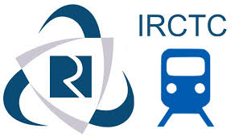

I have been through this blog writing about dynamic pricing in Indian Railways. My logic is simple. Someone who can plan a journey 60 days in advance and someone who needs to travel on an urgent basis - both have a right to travel on Indian Railways. To have a transportation system in the country which says that you can use it only if you can plan 60 days in advance is downright rotten. Further, that those who can plan 60 days in advance should be given so much subsidy to thank them for their ability to plan that there is no money left to expand the transportation system is absolutely regressive. We then build a system wherein the benefit of this subsidy often goes to touts and other middlemen, and not to the traveling public.
Furthermore, while one can perhaps argue in favor of subsidy in non-AC classes of travel on the basis that they are used a lot by the poor (though this can be argued only if you define 98% of Indians as poor), no such argument is possible for AC classes. (We still argue any way claiming that 99.9% of Indians are poor and we must not discriminate against the poor's desire to travel in AC first class. Notwithstanding that cross subsidy through freight hurts all poor significantly, even those who did not travel and did not enjoy that cross-subsidy.)
So I was very happy when Railways finally introduced dynamic pricing last December and I wrote a blog about it. The budget brought many more special trains with dynamic pricing. However, most trains ran only on specific days, and sometimes cancelled at the last minute. Sometimes their timing would not be comfortable and so on. We needed dynamic pricing on our favorite trains, and the recent decision of splitting the tatkal quota into two and making available half of tatkal under dynamic pricing is a great step.
Of course, this is available only on a few trains, but I am hoping that at least on those trains I will be able to book a ticket after the mad rush of Tatkal is over and the IRCTC site start responding to your clicks. Yesterday morning, I checked for AC-2T berths on Shramshakti for the same evening, and I was pleased to see that 3 of them were still available. I suspect that it was because not many people are aware of this new scheme, since at 1850 Rupees, they were still a steal compared to the alternative of taking a taxi to Lucknow airport and buying an air ticket.
So my reaction to this is, a very positive step forward, but a very small step. We must do more. To have about 5% of all seats on Indian Railways on dynamic pricing is too little. I can see that within a few weeks, the scheme will be known to all, and then this quota will also last for a small time, and my desire that a last day ticket be available with high probability will not be met by this step.
As I have argued multiple times, there is really no need for subsidy in AC classes. And hence not just 5% of AC seats but at least 50% (if not 100%) of AC seats should be under dynamic fares. If the political class wants to continue heavy subsidies in non-AC class and have only 5% of seats under dynamic fares, it is ok with me. We need politicians to sell the scheme to masses.
By having 50% or more seats under dynamic fares would mean that it is not just Tatkal seats which are under dynamic fares but all seats. So I can buy a ticket any time. The current system forces me to buy the ticket either 60 days in advance or one day in advance. The new scheme has improved my chances of getting the ticket one day in advance. But I would want a system where I can buy a ticket 7 days in advance as well. So give some AC seats at subsidized prices to those who can plan well, but other AC seats should be given to those who are willing to pay the real cost and some profit to Indian Railways.
In fact, if we implement dynamic fares for a large number of seats, there will be no need for Tatkal at all. Seats will be available at a price even at short notice. But if Government wants to give away 5% of seats at lower price one day before the train journey, that is irrelevant to the whole transportation issue. (But a better system would be a lottery where everyone can participate equally, for example, register your demand the day before, rather than a lottery based on who gets through the IRCTC.)
Indeed, if we have dynamic fares for a large number of seats, it would be possible to get rid of most quotas as well. Most passengers, including the influential persons like MPs, would prefer a guaranteed seat at the time of their choice than face the possibility of not getting any seat through the Emergency or VIP quota and coming to know of it only at the last minute. (Have you heard of quotas at the airlines?)
Further, even AC 1st should be brought under dynamic fares. It is very strange to see AC-1st fare to be lower than dynamic fare of AC-2nd in the same train on the same day. (Or at least ensure that the IRCTC site offers a higher class with lower fare when one asks for premium tatkal ticket.)
So a great step forward, but many more steps needed in this direction.